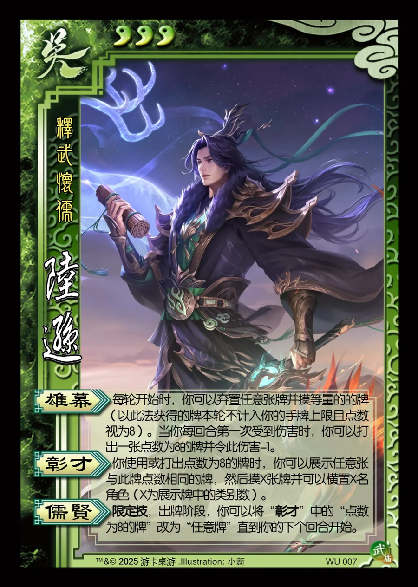

点击卡面查看大图
吴
武陆逊
♥3释武怀儒
雄幕
每轮开始时，你可以弃置任意张牌并摸等量的的牌（以此法获得的牌本轮不计入你的手牌上限且点数视为8）。当你每回合第一次受到伤害时，你可以打出一张点数为8的牌并令此伤害-1。
彰才
你使用或打出点数为8的牌时，你可以展示任意张与此牌点数相同的牌，然后摸X张牌并可以横置X名角色（X为展示牌中的类别数）。
儒贤限定技
限定技，出牌阶段，你可以将“彰才”中的“点数为8的牌”改为“任意牌”直到你的下个回合开始。